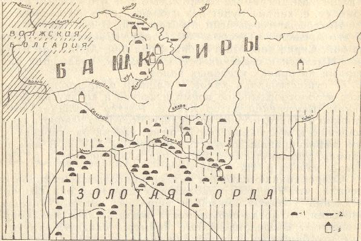

По писменным сведеньям, первая встреча башкир и татаро-монголами произошла в 1210-1211 годах. К этому времени соседние территории были захвачены: Южная Сибирь (1207-1208 - первые походы), Си Ся (Тангустское государство - 1208-1209), Китай (1211-1215), Казахстан, Средняя Азия. Нынешнее Поволжье было следующей целью захватчиков.
В своих рассказах о поездке в страну башкир в 1236 году вергенский монах Юлиан писал, что значительная часть башкир была покорена монголам в период 1214-1220 годов. Потвердить когда начался захват точно нельзя, ведь он мог начаться ещё в 1207, когда монголы впервые напали на Южную Сибирь. Историк Гумилёв относит захват к 1220-1235 годам, не отрицая, однако, что оно могло начаться в 20 годы XI века. Башкиры оказывали сопротивление, но оно всегда заканчивалось поражением. Был необходим другой метод.
Насчёт монголо-татар у башкир сохранилось следующее предание:«Это было летом, когда весь народ находился в летовках (летних пастбищах), горах и долинах рек. Война только своим краешком затронула башкир. В основном она прошла южнее, по Яику (реке Урал)». Скорее всего между завоевателями и покорёнными башкирами был заключён мирный договор о союзе и дружбе, а после него основные силы башкир были использованы в дальнейшив военных походах.
Факт о мирном договоре потверждает не только Юлиан, но и башкирские источники, а именно: шежере (родословная) племени усерган. В нём повествуется о Муйтен бие, который от имени башкир с большими подарками ездил к Чингисхану, добился его расположения, за что был прозван «башкорт халкы бабасы» («отец башкирского народа»).
Башкортстан в составе Золотой Орды. Монголы хотели создать новую Мировую империю, которая должна быть военно-организована, то есть на захваченной территории поддерживалась жёсткая дисциплина, а те, кто нарушал её сурово наказывались. Монголо-татар отличала особенная жестокость к восставшим, к захваченному народу...
Печальна история Волжской Болгарии, которая находилась недалеко от территории башкирских племён. Взять её монголам с первого раза не удалось, в 1229 году они повторили попытку (желание продемонстрировать всё свою мощь против непокорных народов), однако и она была безуспешна. Волжская Болгария сопротивлялась, а территория нынешней республики стало местом нескольких сражений (башкиры принимали в них активное участие). Но силы монгол были велики и Волжская Болгаря пала, а столица Болгар была сожжена. Несколько раз её пытались востановить, но монголо-татары не допускали этого.
Что касается касается самих башкир: они, конечно же, хотели освободиться, об этом повествуют многочисленные легенды (например, «Һуңғы Һартай»). С каждого башкирского племени монголы собирали налоги, были организованы суды, в которых карали за повинность. В башкирском обществе в роли крупных феодалов выступали родо-племенные вожди, именно через них проводились важные договоры с монголо-татарами.
Новая культура. Произошли серьёзные перемены в культурном плане. Во-первых, изменился этнос, конечно, не глобально, но перемены произошли. Это случилось, потому что монголы поделили условно новую территорию, на которую вполне могли переселиться другие покорённые народы (не на всё территорию), в этом плане территория башкир хоть и перешла к захватчикам, всё равно сохраняла целостность. Во-вторых, монголо-татары принесли новую религию - ислам, поэтому язычество постепенно стало отодвигаться. Об этом свидетельствует уменьшение количества курганов (захоронений), где умерших хоронили языческим способом, то есть вместе с вещами.
Так длилось время (более 200 лет): Золотая Орда в какие-то моменты набирала силу, в какие-то теряла (связано со смертью Чингисхана в 1227 и сорой между его потомками), потом вовсе в середине XV века распалась на 5 основных Ханств (Казанское 1438, Астраханское 1459, Крымское 1443, Сибирское конец XV века, Нагайская начало XV века и другие).